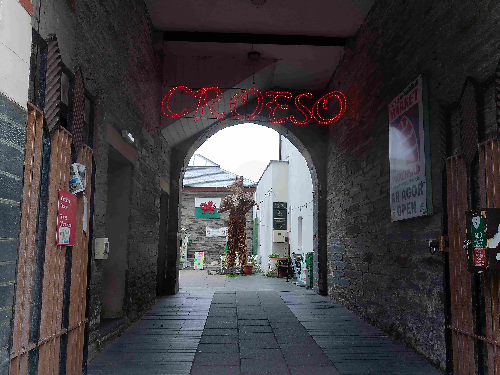

About The Market
Cardigan market first opened its doors in 1860. It was the first civic building in Britain in the “modern Gothic” style advocated by John Ruskin, and includes some Arabic influences (as can be seen in the arch decorations). Over the years the market has gone from strength to strength whilst managed by Ceredigion County Council. It has been managed since July 2014 by Menter Aberteifi, a not for profit organisation, based in The Guildhall building, adjacent to the Market. In January 2015, an exciting 2 year project began, funded by the Coastal Communities Fund. The aim of the project was to regenerate the Market to its former glory as the bustling hub of community life. A new team was recruited to focus solely on the market, and a new logo and website was designed, using local companies. New flags were placed on the high street to direct people through the archway into the glorious courtyard area in front of the market where you can sit and relax on the tables and chairs, and grab a coffee from the Café inside the market. The results are evident as soon as you walk into the building. The Market itself supports many local independent traders who are able to showcase their unique products and services in a beautiful environment. Our longest standing trader has been here for over 40 years. The Market also offers an opportunity for fledgling businesses to test their product and market.
